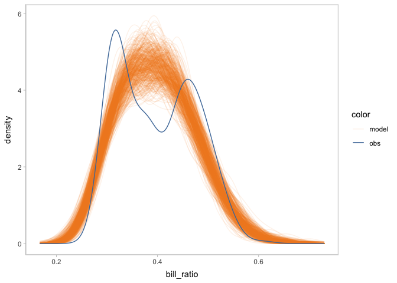
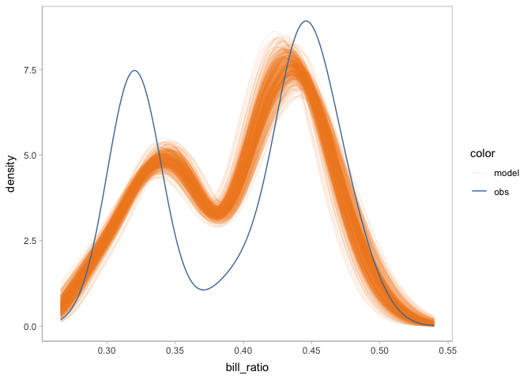
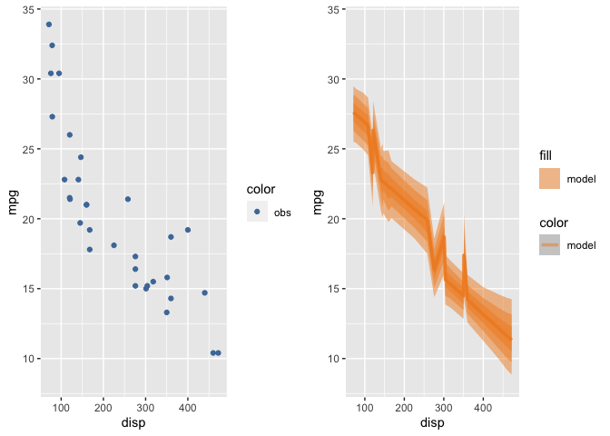

modelcheck is a visualization grammar designed to make it easy to generate informative visualizations for model checking. The modelcheck grammar assumes a basic workflow for creating model checks. First, the model predictions or model features need to be extracted as a distribution of data from a model object, i.e. data tidying. Then the user must specify an uncertainty representation to describe the selected distribution(s). They must also specify the presentation of the observed data. The user can choose among multiple comparative layouts to structure their comparison between observed data and model predictions.
Installation
You can install the development version of modelcheck from GitHub with:
# install.packages("devtools")
devtools::install_github("Guoziyang27/modelcheck")Usage
Background: model
We use a simple model to show the usage of modelcheck.
library(brms)
#> Loading required package: Rcpp
#> Loading 'brms' package (version 2.19.0). Useful instructions
#> can be found by typing help('brms'). A more detailed introduction
#> to the package is available through vignette('brms_overview').
#>
#> Attaching package: 'brms'
#> The following object is masked from 'package:stats':
#>
#> ar
model = brm(
bf(mpg ~ disp + vs + am),
init = "0",
data = mtcars,
iter = 6000,
file = "models/example_model.rds" # cache model (can be removed)
)The results…
model
#> Family: gaussian
#> Links: mu = identity; sigma = identity
#> Formula: mpg ~ disp + vs + am
#> Data: mtcars (Number of observations: 32)
#> Draws: 4 chains, each with iter = 6000; warmup = 3000; thin = 1;
#> total post-warmup draws = 12000
#>
#> Population-Level Effects:
#> Estimate Est.Error l-95% CI u-95% CI Rhat Bulk_ESS Tail_ESS
#> Intercept 23.40 3.31 16.83 29.98 1.00 4998 6130
#> disp -0.03 0.01 -0.04 -0.01 1.00 5339 6336
#> vs 3.01 1.85 -0.69 6.60 1.00 6048 7027
#> am 3.00 1.64 -0.23 6.22 1.00 6766 7410
#>
#> Family Specific Parameters:
#> Estimate Est.Error l-95% CI u-95% CI Rhat Bulk_ESS Tail_ESS
#> sigma 3.25 0.46 2.51 4.27 1.00 8481 7788
#>
#> Draws were sampled using sampling(NUTS). For each parameter, Bulk_ESS
#> and Tail_ESS are effective sample size measures, and Rhat is the potential
#> scale reduction factor on split chains (at convergence, Rhat = 1).Examples
You can create a default model check to do posterior predictive check using only mcplot().
library(modelcheck)
library(ggplot2)
library(dplyr)
#>
#> Attaching package: 'dplyr'
#> The following objects are masked from 'package:stats':
#>
#> filter, lag
#> The following objects are masked from 'package:base':
#>
#> intersect, setdiff, setequal, union
model %>%
mcplot()
To control the way to draw distribution from model, you can add a mc_distribution() to mcplot(). Here, we are drawing the posterior distribution of mu from the Gaussian model we define earlier.
model %>%
mcplot() +
mc_distribution("mu")
To add marginal effects check, you can use mc_condition_on() to add x axis, row grids, and column grids.
model %>%
mcplot() +
mc_distribution("mu") +
mc_condition_on(x = vars(disp))
Now you may find the distribution of mpg margining on disp is a little hard to see. Then you can use mc_model_lineribbon() to use line + ribbon plot to show the uncertainty of model.
model %>%
mcplot() +
mc_distribution("mu", ndraws = 500) +
mc_condition_on(x = vars(disp)) +
mc_model_lineribbon()
mcplot() puts the model predictions and data observations superposed by default. You can change that by using mc_layout_*(). Here we change the comparative layout into juxtaposition.
model %>%
mcplot() +
mc_distribution("mu", ndraws = 500) +
mc_condition_on(x = vars(disp)) +
mc_model_lineribbon() +
mc_layout_juxtaposition()
#> Warning: Removed 19 rows containing missing values (`stat_slabinterval()`).